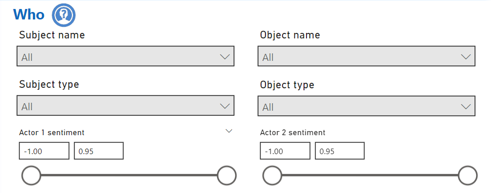

Who: Subject and Object Filters

The Who section in the Trender system allows users to filter news articles based on the people or entities involved. This section is crucial for focusing on the individuals or groups that drive the events described in the articles. In Trender, this is divided into Subjects and Objects.
Subject Filters
The Subject refers to the individual or group that performed the action described in the news article. You can filter articles by various attributes of the subject.
1. Subject Name
The Subject Name filter lets you search for articles that mention a specific subject. This could be a person, organization, or any entity acting within the event.
How to use:
- Enter the name of the subject you want to track. For example, typing "Joe Biden" will return articles where Joe Biden is the primary subject.
2. Subject Type (ICEWS Classification)
The Subject Type filter allows users to categorize subjects based on predefined types from the Integrated Crisis Early Warning System (ICEWS) taxonomy. These types can include categories such as "Government," "Military," "Non-State Actor," etc.
How to use:
- Select a subject type from the dropdown menu.
- Example: Selecting "Government" will display articles where the subject is a government entity.
Common Subject Types:
- Government: State actors like presidents, prime ministers, etc.
- Military: Armed forces personnel.
- Non-State Actor: Terrorist organizations, NGOs, etc.
Object Filters
The Object is the entity on which the action is performed. Like the subject, objects can be filtered to narrow down news coverage by specific targets or recipients of the action.
3. Object Name
The Object Name filter works similarly to the subject name filter, but it focuses on the target of the action in the article.
How to use:
- Enter the name of the object in the search bar.
- Example: Searching for "Ukraine" will display articles where Ukraine is the object or target of actions described in the articles.
4. Object Type (ICEWS Classification)
Similar to subject type, Object Type filters use ICEWS classifications to sort objects into predefined categories.
How to use:
- Select an object type from the dropdown menu to focus on specific kinds of entities.
- Example: Choosing "Non-State Actor" will return articles where the object is a non-state actor, such as a rebel group or activist organization.
Sentiment Filters
In addition to filtering by who the subject and object are, Trender also allows users to filter based on the sentiment between the actors.
5. Actor 1 Sentiment (Subject’s Sentiment toward Object)
This filter lets you explore the sentiment of the Subject toward the Object in the article. Sentiment analysis is performed using NLP techniques and is expressed as positive, neutral, or negative.
How to use:
- Choose whether you want to see articles where the sentiment of the subject (Actor 1) toward the object (Actor 2) is positive, (-1) neutral (0), or negative (+1).
Example:
If you select negative sentiment, you’ll see articles where the subject (e.g., a government) has a negative stance toward the object (e.g., a corporation).
6. Actor 2 Sentiment (Object’s Sentiment toward Subject)
This filter works similarly to Actor 1 Sentiment but focuses on the Object’s sentiment toward the Subject.
How to use:
- Choose whether to display articles where the sentiment of the object (Actor 2) toward the subject (Actor 1) is positive, (-1) neutral (0), or negative (+1).
Example:
If the object (e.g., a country) has a positive sentiment toward the subject (e.g., a politician), those articles will be displayed.
Use Cases
Identifying Influential Actors in Conflicts
By using the Subject Name and Subject Type filters, you can easily track key actors in major global conflicts, such as government officials or military leaders.
Analyzing Relationships Between Countries or Entities
The Sentiment Filters provide insights into how the subject and object interact. For example, if you want to know how the media portrays the relationship between two countries, you can filter based on sentiment analysis.
Tracking Specific Entities Over Time
Using the Object Name filter in combination with the When filter allows users to track the media’s focus on a particular country or entity over time.
Summary of Filters
- Subject Name: Filter by who performed the action.
- Subject Type: Categorize subjects using ICEWS classifications.
- Object Name: Filter by the target of the action.
- Object Type: Categorize objects using ICEWS classifications.
- Actor 1 Sentiment: Sentiment of subject toward object.
- Actor 2 Sentiment: Sentiment of object toward subject.
Who: Subject and Object Filters
The Who section in the Trender system allows users to filter news articles based on the people or entities involved. This section is crucial for focusing on the individuals or groups that drive the events described in the articles. In Trender, this is divided into Subjects and Objects.
Subject Filters
The Subject refers to the individual or group that performed the action described in the news article. You can filter articles by various attributes of the subject.
1. Subject Name
The Subject Name filter lets you search for articles that mention a specific subject. This could be a person, organization, or any entity acting within the event.
How to use:
- Enter the name of the subject you want to track. For example, typing "Joe Biden" will return articles where Joe Biden is the primary subject.
2. Subject Type (ICEWS Classification)
The Subject Type filter allows users to categorize subjects based on predefined types from the Integrated Crisis Early Warning System (ICEWS) taxonomy. The ICEWS sectors ontology organizes entities into a hierarchical structure, ranging from broad sectors to specific offices or ministries, allowing for detailed categorization of subjects. Examples include "Government," "Military," and "Non-State Actor."
How to use:
- Select a subject type from the dropdown menu.
- Example: Selecting "Government" will display articles where the subject is a government entity.
Common Subject Types (ICEWS Sectors Overview):
- Government: State actors such as presidents, prime ministers, or executive offices.
- Military: Armed forces personnel and entities.
- Non-State Actor: Groups or individuals not affiliated with a state, such as NGOs, rebel groups, or terrorist organizations.
This taxonomy supports consistent analysis by categorizing subjects with precision.
Object Filters
The Object is the entity on which the action is performed. Like the subject, objects can be filtered to narrow down news coverage by specific targets or recipients of the action.
3. Object Name
The Object Name filter works similarly to the subject name filter but focuses on the target of the action in the article.
How to use:
- Enter the name of the object in the search bar.
- Example: Searching for "Ukraine" will display articles where Ukraine is the object or target of actions described in the articles.
4. Object Type (ICEWS Classification)
Similar to subject type, Object Type filters use ICEWS classifications to sort objects into predefined categories. This allows for precise filtering by categorizing targets based on the ICEWS sectors ontology.
How to use:
- Select an object type from the dropdown menu to focus on specific kinds of entities.
- Example: Choosing "Non-State Actor" will return articles where the object is a non-state actor, such as a rebel group or activist organization.
Sentiment Filters
In addition to filtering by who the subject and object are, Trender also allows users to filter based on the sentiment between the actors.
5. Actor 1 Sentiment (Subject’s Sentiment toward Object)
This filter lets you explore the sentiment of the Subject toward the Object in the article. Sentiment analysis is performed using NLP techniques and is expressed as positive, neutral, or negative.
How to use:
- Choose whether you want to see articles where the sentiment of the subject (Actor 1) toward the object (Actor 2) is positive (-1), neutral (0), or negative (+1).
Example:
If you select negative sentiment, you’ll see articles where the subject (e.g., a government) has a negative stance toward the object (e.g., a corporation).
6. Actor 2 Sentiment (Object’s Sentiment toward Subject)
This filter works similarly to Actor 1 Sentiment but focuses on the Object’s sentiment toward the Subject.
How to use:
- Choose whether to display articles where the sentiment of the object (Actor 2) toward the subject (Actor 1) is positive (-1), neutral (0), or negative (+1).
Example:
If the object (e.g., a country) has a positive sentiment toward the subject (e.g., a politician), those articles will be displayed.
Use Cases
Identifying Influential Actors in Conflicts
By using the Subject Name and Subject Type filters, you can easily track key actors in major global conflicts, such as government officials or military leaders.
Analyzing Relationships Between Countries or Entities
The Sentiment Filters provide insights into how the subject and object interact. For example, if you want to know how the media portrays the relationship between two countries, you can filter based on sentiment analysis.
Tracking Specific Entities Over Time
Using the Object Name filter in combination with the When filter allows users to track the media’s focus on a particular country or entity over time.
Summary of Filters
- Subject Name: Filter by who performed the action.
- Subject Type: Categorize subjects using ICEWS classifications.
- Object Name: Filter by the target of the action.
- Object Type: Categorize objects using ICEWS classifications.
- Actor 1 Sentiment: Sentiment of subject toward object.
- Actor 2 Sentiment: Sentiment of object toward subject.
ICEWS Ontology Overview
The Integrated Crisis Early Warning System (ICEWS) sectors ontology is a hierarchical classification system designed to organize and categorize entities involved in global events, particularly for crisis analysis and early warning purposes. This structure allows analysts to systematically identify roles and functions across various sectors, from broad national levels to specific government offices, thereby improving the accuracy and relevance of geopolitical analysis.
Structure of the ICEWS Sectors Tree
The ICEWS sectors ontology is organized as a tree, where each level in the hierarchy refines and narrows the scope of the previous level. Below is an outline of the structure:
Level 0: Broad Categories
The top level defines the broadest categories, such as National Sectors, which represent the major domains within which actors operate. This level is designed to give an overarching view of general sectors relevant to geopolitical events.
Level 1: Primary Sectors
Each broad category is divided into primary sectors, such as Government within the "National Sectors" category. Primary sectors help narrow down the focus to specific functions or domains within each broad category.
Level 2: Sub-Sectors
Primary sectors are further broken down into sub-sectors. For example, within "Government," the sub-sector Executive defines a specific segment of government operations. Sub-sectors allow analysts to distinguish between different functions within the primary sector.
Level 3: Specific Offices or Functions
Each sub-sector may contain specific offices or functions. For instance, the Executive Office represents a concrete function within the Executive sub-sector, focusing on entities like the Presidential Office or Prime Minister’s Office.
Level 4: Detailed Ministries or Units
At the deepest level, the tree includes particular ministries or specialized units within the office functions, such as the Agriculture / Fishing / Forestry Ministry. This level provides the most specific categorization, allowing for granular analysis of events related to individual government ministries or departments.
Purpose and Application of the ICEWS Ontology
The ICEWS sectors ontology aids in the systematic classification of actors in global events, allowing analysts to: - Improve Analysis Consistency: By using a standardized structure, analysts can consistently categorize entities across different regions and contexts. - Enable Targeted Filtering: The hierarchy allows users to filter events and actors by specific levels, making it easier to focus on relevant sectors. - Support Crisis Detection: By categorizing entities into detailed roles and functions, the system enhances the detection of sector-specific crises and patterns.
This hierarchical structure supports ICEWS’s mission of predicting, analyzing, and responding to international crises by categorizing entities with a high degree of specificity.
Example of ICEWS Sector Hierarchy
Here’s an example of how a sector might be organized:
- National Sectors
- Government
- Executive
- Executive Office
- Agriculture / Fishing / Forestry Ministry
This structure provides analysts with a clear, organized framework for categorizing the roles and functions of entities in global events, supporting comprehensive and targeted crisis analysis.